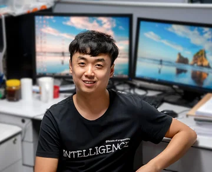

Changjian Li
Lab lead · Assistant Professor
The lab
We are a lab of researchers exploring graphics, vision and the space between them, based in Edinburgh.

Lab lead · Assistant Professor
PhD student
PhD student · Co-supervised with Hakan Bilen
PhD student · Google PhD Fellow 2025
PhD student
PhD student · CDT-D2AIR
Former members and students, and their next destinations.
Postdoc
Jun 2024 – Dec 2025
Next destination: Senior Machine Learning Engineer · Sony PlayStation
Aug 2023 – May 2025
Next destination: Postdoc · University of Edinburgh
PhD & Postdoc
Apr 2021 – Nov 2024
Next destination: Associate Researcher · Shandong University
Kuankuan Cheng
Feb 2025 – May 2026
Next destination: PhD · TU Wien
Xingyu Han
Apr 2025 – Feb 2026
Next destination: PhD · University of Texas at Dallas
Mingjun Yang
Sep 2023 – Aug 2024
Next destination: PhD · University of Melbourne
Longbin Ji
Apr 2024 – Sep 2024
Next destination: Engineer · Baidu
Prakash Nair
Apr 2024 – Sep 2024
Next destination: Researcher · Canon Medical Research Europe
Rongman Xu
Jun 2025 – May 2026
Next destination: University of Edinburgh
Jiawei Wang
May 2023 – Nov 2025
Next destination: PhD · University of Hong Kong
Shuyuan Zhang
Jun 2023 – May 2024
Next destination: MSc · Imperial College London
Now a PhD student in the lab.
Jing Xu
Sep 2023 – Dec 2023
Dates and destinations from Changjian Li’s alumni list ↗.